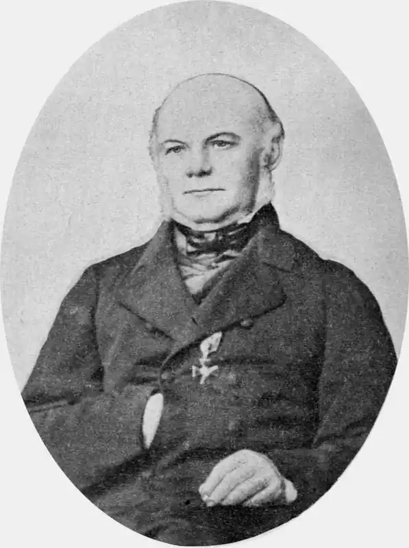

Яків Федорович Головацький народився 20 жовтня 1814 р. в с. Чепелях, Золочівського округу в Галичині в багатодітній родині священика. Навчався спочатку у так званій нормальній школі, а в 1825 — 1839 рр. у гімназії та університеті у Львові. Національно-визвольні ідеї М. Шашкевича, "Енеїда" І. Котляревського та збірки народних пісень М. Максимовича запалили Головацького до активної громадської та фольклористичної роботи. Збираючи пісні, описуючи мову і побут народу, він обійшов пішки Галичину, Закарпаття, бував на Буковині і в Угорщині.
Починаючи з 30-х років, Я. Головацький листувався з М. Погодіним, О. Бодянським, Я. Колларом, К. Запом, П. Шафариком та іншими славістами і діячами слов'янського відродження. За участь у виданні "Русалки Дністрової" і зв'язки з культурними діячами слов'янського світу перебував під наглядом поліції і посаду священика зміг дістати лише 1842 року. Спочатку жив у с. Микитинцях на Станіславщині (нині Івано-Франківськ), а з 1846 р. у с. Хмелевій тодішнього Чортківського округу. В цей час Головацький видав "Галицькі приповідки, зібрані Ількевичем" (1841), важливу працю "Становище русинів у Галичині" (німецькою мовою, 1846), два збірники "Вінок русинам на обжинки" (разом з братом Іваном; ч. І — 1846; ч. II — 1847).
В останні роки життя Головацький стояв осторонь української літератури, не поділяв передових поглядів щодо її розвитку. Літературною працею займався Головацький в 30 — 40-х роках, пізніше виступав як учений. Велика наукова спадщина Головацького досі не зібрана і не вивчена. Помер Я. Головацький 13 травня 1888 р. у м. Вільно. Крім власного прізвища, свої твори підписував псевдонімами і криптонімами: Балагур Яцько; Галичанин; Г-кій; Головацький Ярослав; Я.; Я. Г.; Я. Ф.; Я. Ф. І.